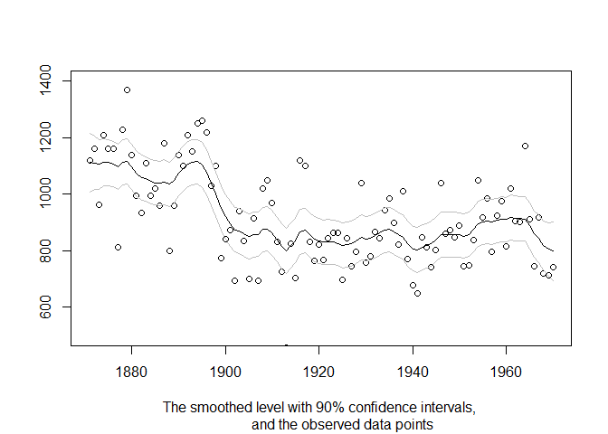

Overview
statespacer is a package for state space modelling and forecasting in R. It provides functions that make estimating models in State Space form a breeze. This package implements state-of-the-art algorithms developed by various time series practitioners such as J. Durbin and S.J. Koopman. Details about the algorithms can be found in their book, “Time Series Analysis by State Space Methods”.
If you are new to statespacer, check out vignette("intro", "statespacer") for a quick start to the statespacer package! Also check out the references for the following functions:
-
statespacer()for fitting State Space models. -
predict.statespacer()for producing forecasts using fitted State Space models. -
SimSmoother()for drawing random samples of a fitted State Space model conditional on the data.
State Space Components
This package supports numerous state space components:
- The Local Level
- The Local Level + Slope
- Smoothing Splines
- Trigonometric Seasonality, BSM
- (Business) Cycles
- Explanatory Variables
- Explanatory Variables with time-varying coefficients
- Explanatory Variables in the Local Level
- Explanatory Variables in the Local Level + Slope
- ARIMA
- SARIMA
- Moreover, you can specify a component yourself!
These components can be used for both univariate, and multivariate models. The components can be combined in order to get more extensive models. Moreover, the user can control the format of the variance - covariance matrices of each of the components. This way, one could specify the components to be deterministic instead of stochastic. In the multivariate case, one could impose rank restrictions on the variance - covariance matrices such that commonalities in the components are estimated, like common levels, common slopes, etc.
Fitting Procedure
The package employs a univariate treatment, and an exact initialisation for diffuse elements, to estimate the state parameters and compute the loglikelihood. Collapsing large observation vectors is supported as well. Moreover, missing observations are readily dealt with by putting the models in State Space form!
Installation
You can install statespacer from CRAN with:
install.packages("statespacer")Development version
To get a bug fix or to use a feature from the development version, you can install the development version of statespacer from GitHub.
# install.packages("devtools")
devtools::install_github("DylanB95/statespacer")Usage
library(statespacer)
library(datasets)
y <- matrix(Nile)
fit <- statespacer(y = y,
local_level_ind = TRUE,
initial = 0.5*log(var(y)))
plot(1871:1970, fit$function_call$y, type = 'p', ylim = c(500, 1400),
xlab = NA, ylab = NA,
sub = "The smoothed level with 90% confidence intervals,
and the observed data points")
lines(1871:1970, fit$smoothed$level, type = 'l')
lines(1871:1970, fit$smoothed$level + qnorm(0.95) * sqrt(fit$smoothed$V[1,1,]),
type = 'l', col = 'gray'
)
lines(1871:1970, fit$smoothed$level - qnorm(0.95) * sqrt(fit$smoothed$V[1,1,]),
type = 'l', col = 'gray'
)
Getting help
If you encounter a clear bug, please file an issue with a minimal reproducible example on GitHub.
Please note that the ‘statespacer’ project is released with a Contributor Code of Conduct. By contributing to this project, you agree to abide by its terms.